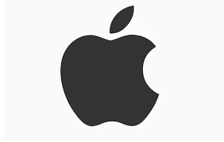

Kisah Sukses dan Sejarah Apple Inc., Perusahaan Paling Inovatif di Dunia

Apple Inc. dianggap banyak pakar sebagai perusahaan paling inovatif di dunia, sekaligus paling menguntungkan dalam dunia bisnis hingga saat ini. Ia mampu membuat barang dengan biaya produksi murah dan menjual produknya dengan margin keuntungan yang tinggi. Tidak ketinggalan desain yang simpel, elegan dan eye-catching di jajaran produknya.
Namun sebelum melihat lebih jauh mengapa Apple bisa seperti itu, mari kita lihat lebih dulu kisah sukses dan sejarah Apple Inc. yang penuh dengan inovasi revolusioner.
Sejarah Apple Inc.
Wikipedia menulis bahwa Apple Inc. memiliki kantor pusat di Cupertino, California. Dibangun oleh Steve Jobs, Steve Wozniak, & Ronald Wayne pada April 1976 untuk mengembangkan serta menjual komputer personal Apple I yang dirancang oleh Steve Wozniak.
Perusahaan ini awalnya berdiri pada bulan Januari 1977 dengan menggunakan nama Apple Computer, Inc. Namun pada bulan Januari tahun 2007, Jobs mengubah nama perusahaan dari Apple Computer, Inc. ke Apple Inc. sebagai cermin beralihnya fokus perusahaan dari pembuat komputer ke barang elektronik konsumen.
Pada bulan Agustus 2011, Jobs melepas jabatan CEO-nya karena masalah kesehatan. Ia digantikan oleh Tim Cook yang sebelumnya menjabat posisi COO (Chief Operation Officer) di Apple. Dua bulan setelah mundur, Jobs pun meninggal dunia.
Apple telah memproduksi perangkat keras yang berhasil merevolusi sejumlah produk eksisting di pasar bahkan mampu juga membuat kategori baru produk. Produk berkelasnya mulai dari telepon pintar iPhone, komputer tablet iPad, komputer pribadi Mac, pemutar media portabel iPod, jam pintar Apple Watch, pemutar media digital Apple TV hingga pengeras suara pintar HomePod.
Perusahaan ini juga memproduksi perangkat lunak sistem operasi macOS dan iOS, pemutar media iTunes, peramban (browser) web Safari dan perangkat kreativitas & produktivitas iLife serta iWork. Juga bermacam aplikasi untuk kalangan profesional, antara lain Final Cut Pro, Logic Pro & Xcode. Ia juga menawarkan layanan online (daring), seperti iTunes Store, iOS App Store & Mac App Store, Apple Music serta iCloud.
Cara Apple Berinovasi Bukan dengan Empati
Sejumlah perusahaan terbukti berkembang menjadi besar dengan berbasis empati, namun Apple adalah suatu pengecualian yang menarik. Empati tampaknya tidak menjadi driver inovasi di dalam Apple Inc., berbeda dengan perusahaan seperti IBM, Mercedes-Benz, Avedis Zildjian, Harley-Davidson dan lain-lain.
Sang pendiri Apple, Steve Jobs adalah orang yang brengsek, tak pernah beramal (berbeda jauh dari Bill Gates), menindas pegawainya dan tidak mengakui anak kandungnya sendiri[2]. Sempat keluar dari Apple, namun kembali lagi di tahun 1997 saat Apple dipimpin oleh CEO Gil Amelio. Dan Steve Jobs kemudian berhasil membuat Apple, yang benar-benar hampir bangkrut saat itu, mampu bangkit lagi!
Langkah terobosan terpenting yang dilakukannya ketika itu adalah mengurangi produk Apple hingga menjadi empat buah saja. Strategi ini berdampak signifikan karena insinyur Apple bisa lebih fokus mengembangkan produk-produk Apple[3].
Hasilnya, pada dasawarsa pertama abad ke-21, berbagai inovasi terbesar dalam dunia bisnis dilahirkan oleh Apple. Produk yang belum pernah ada sebelumnya seperti iPod, iTunes/Apple Store, iPhone dan iPad terjual hingga 100 miliar dolar AS. Bahkan pada tahun 2016, Apple yang cuma menguasai 14,5 persen pasar smartphone (telepon pintar), bisa meraih 79 persen dari total keuntungan seluruh penjualan telepon pintar sedunia! Bandingkan dengan Samsung yang menguasai 20,8% pangsa pasar dunia, namun hanya memperoleh 14,6% saja dari total keuntungan [2].
Namun di balik kesuksesan luar biasa dari Apple itu, menurut Dr. Indrawan Nugroho sebenarnya ada peran besar dari para pemimpin dan karyawan di level menengah (middle management) yang seringkali terlupakan karena tertutupi oleh sihir sang pendiri[4]. Salah seorang leader di middle management itu bernama Jonathan “Jony” Ive yang memimpin departemen desain di Apple.
Perannya dalam menyelamatkan Apple dari kebangkrutan sangat signifikan. Dialah otak yang mendesain iMac (1998), iBook (1999), iPod (2001), iPhone (2007), MacBook Air (2008), iPad (2010), iOS 7 (2013), Apple Watch (2014)[5]. Seluruhnya merupakan produk-produk yang sukses luar biasa. Bisa dibilang Apple selamat dari kehancuran karena peran sentral Jony Ive dan timnya.
Steve Jobs bersama Jony Ive berhasil membangun kembali Apple dengan budaya terpimpin-desain (design-led culture). Departemen desainnya Jony Ive pun menjelma menjadi departemen paling berkuasa di Apple, tentunya setelah Steve Jobs sendiri[6].
Evolusi perusahaan Apple ini pun menarik perhatian Scott Galloway, seorang profesor di Stern School of Business New York University, AS. Ia berpendapat bahwa Apple sebenarnya adalah sebuah merek mewah (luxury brand). Katanya, banyak penulis dan pengamat yang luput memperhatikan hal itu. Padahal Apple telah berevolusi dari sebuah perusahaan teknologi di masa-masa awal menjadi sebuah merek mewah belakangan ini.
Buktinya, kata Scott, jika Anda pergi ke Manhattan maka Anda akan menjumpai Apple IOS. Namun bila Anda pergi ke New Jersey atau Bronx, akan ada Android di sana. Di Los Angeles, apabila Anda tinggal di Malibu, Beverly Hills atau Palisades maka Anda adalah pemilik iPhone. Namun sebaliknya, South Central, Oxnard atau Inland Empire adalah tempatnya para pemilik Android.
Scott Galloway sendiri pernah menjadi konsultan untuk beberapa merek mewah dunia selama 25 tahun lamanya. Ia berkesimpulan bahwa setiap merek mewah memiliki 5 ciri khas: mempunyai pendiri yang ikonik, berkeahlian artisan (artisanship), integrasi vertikal dengan toko-toko retailnya yang mewah, jangkauan global dan berharga premium. Dan memang benar, kelima ciri itu juga dipunyai oleh Apple[2].
Para pemimpin dan timnya di manajemen level menengah memang menanggung stres paling besar. Dia harus menghadapi pendiri / CEO sekaligus menjadi eksekutor langsung di lapangan. Namun pengalaman Apple, XBox Microsoft dan Ford menunjukkan, dalam video di atas, bahwa seringkali middle management tanpa diduga justru muncul sebagai penyelamat perusahaan.
Sumber: Teknik Elektro ITI
Jaringan Internet dan Komputer
Internet merupakan penemuan revolusioner yang mengubah dunia. Internet menghubungkan berbagai tempat di belahan dunia sehingga orang dapat berkomunikasi dengan mudah. Dahulu, 30 tahun yang lalu, orang berkirim surat, belajar, berdagang, periksa kesehatan, dan masih banyak hal lain harus dilakukan secara isik.
Saat ini, hal-hal tersebut dapat dilakukan dengan efektif dan eisien karena adanya internet.Jaringan komputer, internet, web, peramban, hypertext, http, www, Tethering, Wireless LAN (WLAN), Wireless Fidelity (wi-i), modem. Saat sekarang ini, internet dengan konten yang ada di dalamnya telah menjadi perpustakaan terbesar di dunia dimana telah diakses oleh 196,7 juta lebih manusia pengguna atau 73,7 persen dari seluruh penduduk Indonesia sampai pada akhir kuartal kedua tahun 2020. Jumlah pengguna ini bertambah 25.5 juta dari tahun lalu. Internet juga bermanfaat bagi pelajar di tingkat SMP. Pada bab ini kalian belajar konsep tentang jaringan komputer dan internet, bagaimana menghubungkan peranti dengan internet, dan konsep sederhana proteksi data dengan enkripsi.
A. Pengantar Jaringan Komputer dan Internet
Jaringan komputer adalah sekumpulan komputer yang terhubung dalam jaringan. Jaringan komputer memungkinkan komputer saling berbagi sumber daya dan bekerja sama melalui suatu protokol komunikasi.
Komputer pada jaringan komputer terhubung dengan menggunakan media kabel, fiber optik, atau media tanpa kabel (wireless). Internet dikenal pada tahun 1849 dengan istilah internetted yang berarti interconnected.
Namun, saat ini, istilah internet mengacu pada sistem jaringan komputer global yang digunakan untuk berkomunikasi antarperangkat komputer maupun antar jaringan komputer menggunakan protokol TCP/ IP (Transmission Control Protocol/Internet Protocol).
Jaringan yang terhubung dapat berupa jaringan pribadi, publik, akademik, bisnis, dan pemerintah dari lingkup lokal hingga global. Internet saat ini telah dapat menghubungkan komputer, perangkat telepon, CCTV, printer, dan bahkan perangkat lain yang dikenal dengan IoT (Internet of Things).
Pada bulan November 2006, internet dimasukkan dalam tujuh keajaiban dunia. Internet membawa berbagai macam sumber daya dan layanan informasi di dalamnya, seperti dokumen hypertext yang saling terkait dan aplikasi World Wide Web (WWW), surat elektronik, telepon, dan berbagi file.
Asal mula internet berasal dari penelitian dan pengembangan teknik pemaketan dan pengiriman data (packet switching) yang dilakukan oleh Departemen Pertahanan Amerika Serikat pada 1960-an. Penelitian ini diharapkan dapat membuat komputer berinteraksi dengan komputer lain untuk berbagi sumber daya komputer (seperti prosesor, memori, eksternal disk) secara bersamaan. Pendanaan yang kuat dari pemerintah dan swasta dari seluruh dunia membuat internet terus berkembang. Pada tahun 1990-an.
1. World Wide Web (WWW)
World Wide Web yang sering disebut sebagai "web" atau situs web adalah sistem informasi/aplikasi yang dapat diakses menggunakan internet. Web diakses oleh pengguna menggunakan perangkat lunak yang disebut peramban web dengan menuliskan alamat web yang disebut Uniform Resource Locators (URL)
Web atau situs web memiliki halaman- halaman web (web page) yang berisi data dan informasi yang tersimpan di web server dalam bentuk hyper text markup language (html) file. Ketika mengakses situs web, sebuah peramban web akan membaca halaman-halaman web melalui protokol yang disebut HTTP (Hypertext Transfer Protocol) atau aturan pentransferan hypertext.
Peramban web akan membaca html, menerjemahkannya, dan menampilkannya di peramban web. Melalui hyperlinks yang ada dalam sebuah halaman web, kita dapat meminta menelusuri halaman-halaman web untuk mencari informasi dan menampilkannya. Dengan hyperlinks inilah, seakan-akan pengguna 'meloncat' dari suatu halaman situs web ke halaman situs web yang lain. Proses meloncat dari satu tempat ke tempat lain melalui web ini sering disebut 'suring on the web' atau berselancar di web.
2. Surel. Electronic Mail (Email)
Surel. Electronic Mail (Email) atau dalam bahasa Indonesia disebut surat elektronik adalah aplikasi yang memungkinkan para pengguna internet untuk saling berkirim surat/pesan melalui internet. Para pengguna surel memiliki sebuah kotak surat (mailbox) elektronik yang tersimpan dalam suatu mail server. Kotak surat itu sendiri memiliki sebuah alamat sebagai pengenal agar dapat berhubungan dengan kotak surat lainnya, baik dalam bentuk penerimaan maupun pengiriman pesan. Pemilik mailbox sewaktu-waktu dapat mengecek isinya, menjawab pesan, menghapus, atau menyunting dan mengirimkan pesan surel.
3. e-Banking. Electronic Banking
e-Banking. Electronic Banking atau e-banking dapat diartikan sebagai aktivitas perbankan di internet. Layanan ini memungkinkan nasabah sebuah bank dapat melakukan hampir semua jenis transaksi perbankan melalui internet. Bank menyediakan situs web untuk bertransaksi dimulai dari pengecekan rekening, transfer dana antarrekening, hingga pembayaran tagihan bulanan (seperti: listrik, telepon, dsb.). Pada e-banking, biasanya diterapkan sistem keamanan yang ketat pada situs webnya agar tidak terjadi kejahatan perbankan.
B. Koneksi Internet
Internet adalah jaringan komputer global yang mampu menghubungkan komputer di berbagai belahan dunia. Ketika kita ingin menghubungkan peranti kita dengan internet, ada berbagai cara atau teknologi yang dapat kita gunakan. Diantara teknologi yang sering kita jumpai adalah menghubungkan peranti kita dengan teknologi tanpa kabel yang sering disebut Wi-Fi atau Wireless LAN. Adapun teknologi untuk koneksi yang menggunakan ponsel disebut dengan Tethering. Pada subbab ini kalian akan belajar bagaimana membuat koneksi dengan teknologi Wi-Fi dan tethering.
C. Proteksi Data dan File
Data merupakan sumber daya yang penting bagi individu atau kelompok penggunanya. Oleh sebab itu, data harus diproteksi dari berbagai risiko yang mungkin terjadi dan membawa dampak buruk bagi pemiliknya. Salah satu cara untuk melindungi data adalah dengan menggunakan enkripsi. Enkripsi adalah proses mengubah data menjadi bentuk yang tidak dapat dibaca oleh orang lain kecuali oleh orang yang memiliki kunci enkripsi. Dengan menggunakan enkripsi, data yang dikirimkan melalui internet akan aman dari pencurian data.
Saat ini, pencurian data dapat dilakukan dengan berbagai cara dan tingkat kecanggihan. Data dapat dicuri melalui jaringan komputer, melalui aplikasi, atau melalui kecerobohan penggunanya sendiri.
Cara Kerja Enkripsi
Enkripsi bekerja dengan cara sebagai berikut, dengan contoh Agus mengirimkan teks ke temannya Dewi.
- Data asli (sering disebut plain text) dari Agus dienkripsi dengan fungsi (cipher) tertentu.
- Hasil enkripsi berupa ciphertext, sebagai teks yang terenkripsi.
- Ciphertext dikirimkan ke Dewi melalui jaringan internet/komputer.
- Dewi menerima ciphertext dan dilakukan Dekripsi.
- Pesan kembali ke pesan asli sehingga dapat dibaca oleh Dewi.
Sumber: Kompasiana
Cognition Labs Kenalkan Devin, Programmer AI Pertama
Sebuah inovasi baru telah muncul di dunia teknologi dengan diperkenalkannya Devin, sebuah model kecerdasan buatan yang diklaim mampu menjadi seorang insinyur perangkat lunak. Cognition Labs, sebuah startup teknologi yang berbasis di Amerika Serikat, secara resmi memperkenalkan Devin dan mengklaim bahwa AI ini dapat melakukan pekerjaan teknis yang kompleks seperti menyelesaikan proyek pemrograman dari awal hingga akhir, membangun situs web dan aplikasi, serta melatih model AI-nya sendiri.
Menurut perusahaan, Devin telah melewati wawancara teknik dari perusahaan AI terkemuka dan bahkan berhasil menyelesaikan pekerjaan nyata di platform freelance Upwork. Hal ini menimbulkan pertanyaan menarik tentang potensi Devin untuk menggantikan peran seorang insinyur perangkat lunak manusia.
"Devin adalah standar baru di SWE-Bench coding benchmark, telah berhasil melewati wawancara teknik praktis dari perusahaan AI terkemuka, dan bahkan telah menyelesaikan pekerjaan nyata di Upwork," tulis Cognition Labs.
Perusahaan menjelaskan kemampuan Devin melalui sebuah post blog yang mengungkapkan potensi luar biasa AI ini. Berdasarkan postingan dan demonstrasi video yang disertakan, Devin mampu belajar menggunakan teknologi yang belum dikenal sebelumnya, serta mampu membangun dan menerapkan aplikasi secara mandiri dari awal hingga akhir. Kemampuannya tidak berhenti di situ, karena Devin juga secara otomatis dapat menemukan dan memperbaiki bug dalam basis kode, mengatasi masalah bug dan permintaan fitur dalam repositori sumber terbuka, bahkan berkontribusi pada repositori produksi yang sudah matang. Keunggulan Devin semakin terbukti dengan pencapaiannya mencetak skor 13,86 persen dalam benchmark coding SWE-bench, jauh melampaui model AI besar lainnya seperti Claude 2 dan GPT-4. Namun yang lebih menarik, perusahaan mengklaim bahwa Devin mampu menyelesaikan masalah tanpa bantuan, menandakan kemampuan otonom yang sangat impresif dari AI ini.
Cognition Labs mempromosikan Devin sebagai "programmer pertama" yang telah berhasil mencetak skor tinggi dalam benchmark coding SWE-Bench, bahkan melampaui model AI besar lainnya seperti Claude 2 dan GPT-4. Namun, perlu diperhatikan bahwa meskipun Cognition Labs telah membuat klaim besar tentang kemampuan AI mereka, klaim tersebut saat ini tidak dapat diverifikasi karena platform mereka belum tersedia di ranah publik. Selain itu, startup ini juga belum merilis laporan teknis yang rinci tentang model AI mereka, meskipun mereka menyatakan bahwa laporan tersebut akan segera dirilis. Saat ini, semua model AI lainnya yang berfokus pada pemrograman masih berperan sebagai asisten dan hanya dapat melakukan tugas berdasarkan instruksi tertentu dalam kapasitas terbatas, dengan bantuan dan petunjuk manusia dalam menentukan file mana yang perlu diedit.
Meskipun demikian, potensi yang ditawarkan oleh Devin AI sangat menarik. Model ini dilengkapi dengan cangkangnya sendiri, editor kode, dan peramban yang memungkinkannya untuk secara otonom menemukan, memperbaiki bug dalam kode, serta berkontribusi pada repository open source dan produksi. Devin juga dapat belajar menggunakan teknologi yang tidak dikenal, membangun aplikasi dari awal hingga akhir, dan bahkan menerapkan solusi tanpa bantuan eksternal.
Namun, pertanyaan yang muncul adalah apakah Devin benar-benar dapat menggantikan peran seorang insinyur perangkat lunak manusia. Meskipun kemampuannya sangat mengesankan, terdapat beberapa hal yang perlu dipertimbangkan.
Pertama, keberadaan Devin dapat memicu diskusi tentang masa depan pekerjaan teknis. Jika AI semakin mampu menggantikan peran manusia dalam pekerjaan yang membutuhkan kreativitas dan keputusan kompleks, hal ini dapat mengubah paradigma dalam berbagai industri. Namun, di sisi lain, hal ini juga dapat menimbulkan kekhawatiran tentang hilangnya lapangan pekerjaan bagi insinyur perangkat lunak manusia.
Kedua, penting untuk mengingat bahwa meskipun Devin dapat melakukan tugas-tugas teknis dengan tingkat kecanggihan yang tinggi, AI ini juga masih memiliki batasan dan keterbatasan. Klaim bahwa Devin dapat bekerja secara otonom dan mengatasi masalah tanpa bantuan eksternal perlu ditinjau lebih lanjut, terutama dengan adanya klaim bahwa model AI lainnya masih membutuhkan bantuan dan arahan manusia.
Selain itu, transparansi dan keamanan juga menjadi perhatian utama dalam pengembangan teknologi AI seperti Devin. Diperlukan laporan teknis yang rinci dan platform yang tersedia untuk publik agar klaim dan kemampuan AI ini dapat diverifikasi dan dipahami dengan lebih baik oleh komunitas teknologi.
Cognition Labs sebagai perusahaan pengembang AI juga harus mempertimbangkan dampak sosial dan etis dari penggunaan teknologi mereka. Perdebatan tentang keamanan data, privasi, dan penggunaan AI dalam konteks yang tepat perlu terus diajukan dan diperdebatkan.
Sumber: Cloud Computing Indonesia